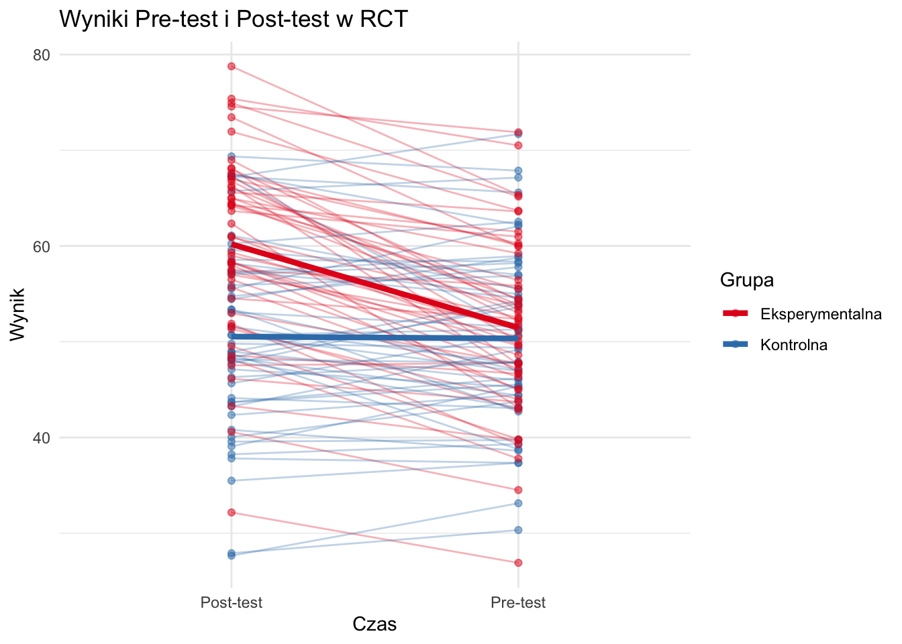
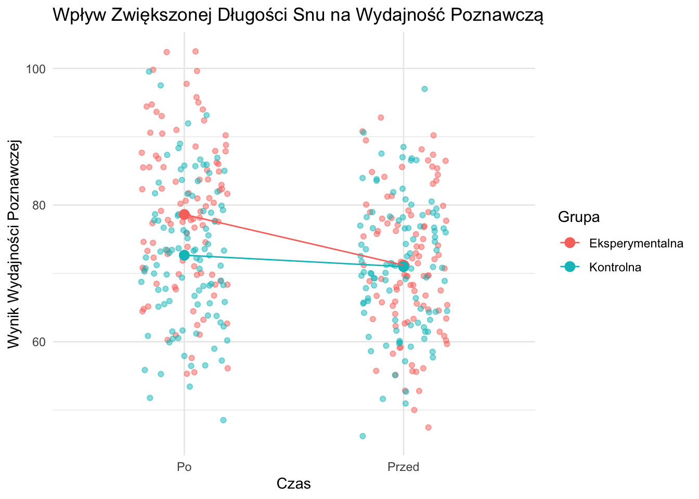
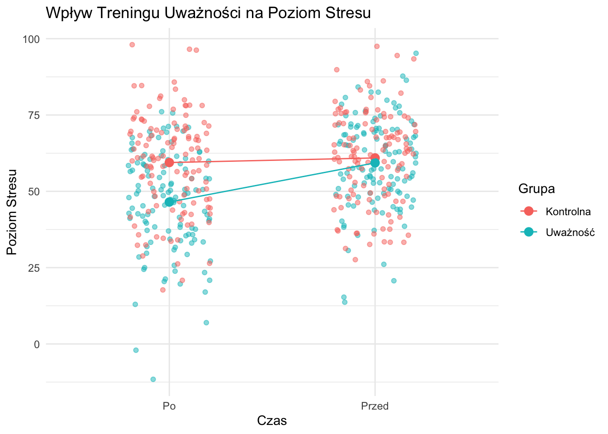
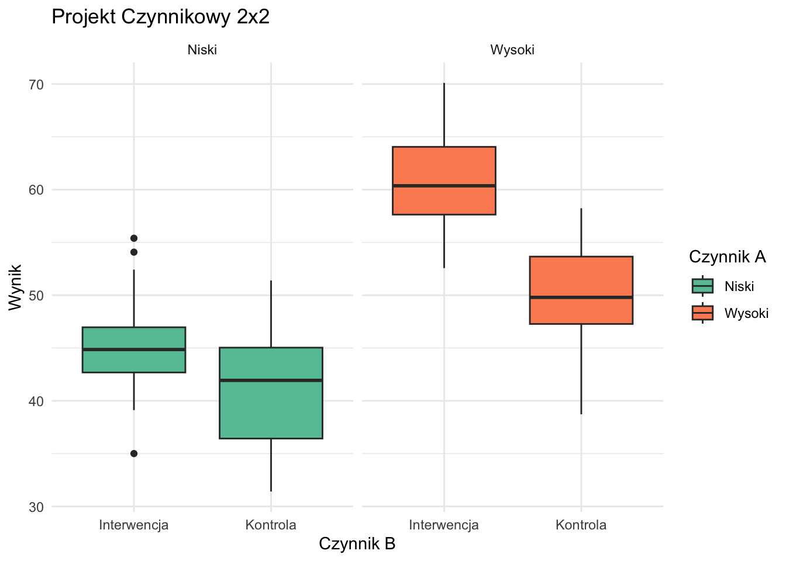
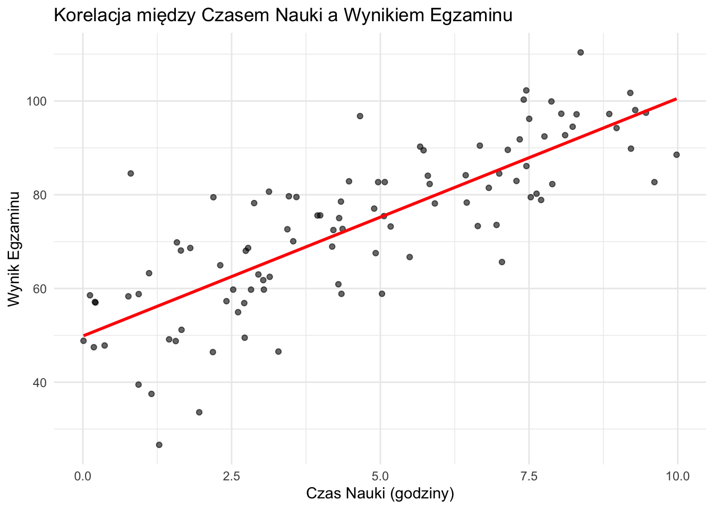
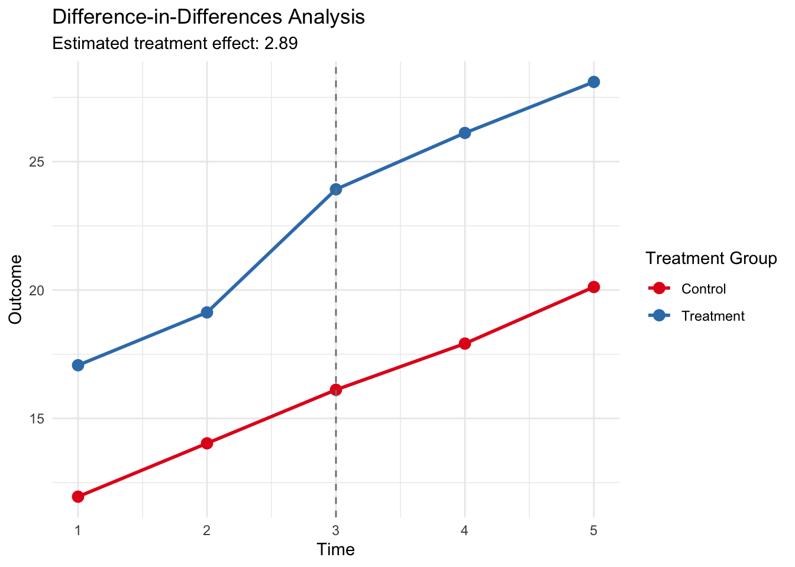
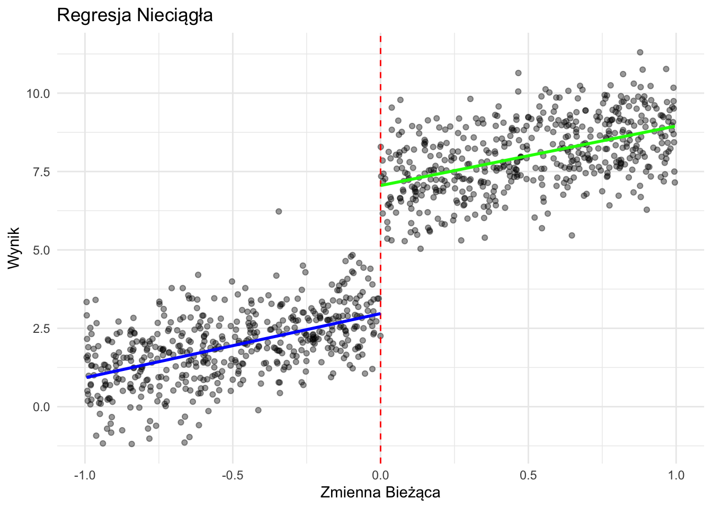

10Projekty Badawcze: Podejścia Eksperymentalne i Nieeksperymentalne
10.1 Wstęp
Projekty badawcze stanowią fundament procesu naukowego, zapewniając ustrukturyzowane podejście do badania hipotez i odpowiadania na pytania badawcze. Ten rozdział analizuje dwie główne kategorie projektów badawczych: eksperymentalne i nieeksperymentalne, ze szczególnym uwzględnieniem modelu potencjalnych wyników Neymana-Rubina. Zagłębimy się w różne typy projektów, ich charakterystykę i przedstawimy praktyczne przykłady wykorzystania R do analizy danych i wizualizacji.
10.2 Projekty Eksperymentalne
Projekty eksperymentalne charakteryzują się kontrolą badacza nad zmienną(ymi) niezależną(ymi) oraz losowym przydziałem uczestników do różnych warunków. Te projekty są uważane za złoty standard w ustalaniu związków przyczynowych.
10.2.1 Randomizowane Badania Kontrolowane (RCT)
RCT są najbardziej rygorystyczną formą projektu eksperymentalnego. Obejmują one:
Losowy przydział uczestników do grup eksperymentalnej i kontrolnej
Manipulację zmienną niezależną
Pomiar zmiennej zależnej
Zobaczmy wizualizację prostego projektu RCT:
library(ggplot2)library(dplyr)set.seed(123)# Tworzenie przykładowych danychn <-100data <-data.frame(id =1:n,grupa =factor(rep(c("Kontrolna", "Eksperymentalna"), each = n/2)),pre_test =rnorm(n, mean =50, sd =10),post_test =NA)# Symulacja efektu leczeniadata$post_test <-ifelse(data$grupa =="Eksperymentalna", data$pre_test +rnorm(n/2, mean =10, sd =5), data$pre_test +rnorm(n/2, mean =0, sd =5))# Przekształcenie danych do formatu długiegodata_long <- tidyr::pivot_longer(data, cols =c(pre_test, post_test),names_to ="czas", values_to ="wynik")# Tworzenie wykresuggplot(data_long, aes(x = czas, y = wynik, color = grupa, group =interaction(id, grupa))) +geom_line(alpha =0.3) +geom_point(alpha =0.5) +stat_summary(aes(group = grupa), fun = mean, geom ="line", size =1.5) +labs(title ="Wyniki Pre-test i Post-test w RCT",x ="Czas", y ="Wynik", color ="Grupa") +theme_minimal() +scale_color_brewer(palette ="Set1") +scale_x_discrete(labels =c("pre_test"="Pre-test", "post_test"="Post-test"))
Warning: Using `size` aesthetic for lines was deprecated in ggplot2 3.4.0.
ℹ Please use `linewidth` instead.

Projekt Randomizowanego Badania Kontrolowanego
Ten wykres pokazuje indywidualne trajektorie i średnie grupowe dla wyników pre-test i post-test w hipotetycznym RCT. Grupa eksperymentalna wykazuje wyraźny wzrost wyników w porównaniu do grupy kontrolnej.
10.3 Testy A/B: Przykład i Porównanie z RCT
Testy A/B to szeroko stosowana metoda eksperymentalna w marketingu cyfrowym, projektowaniu doświadczeń użytkownika i rozwoju produktów. Ten rozdział przedstawi przykład testu A/B, wyjaśni jego metodologię i omówi, czym różni się od Randomizowanych Badań Kontrolowanych (RCT).
10.3.1 Przykład: Współczynnik Konwersji Strony Docelowej
Rozważmy przykład, w którym firma e-commerce chce poprawić współczynnik konwersji swojej strony docelowej. Decydują się przetestować dwa różne układy: obecny układ (A) i nowy układ (B).
Figure 10.1: Wyniki Testu A/B: Współczynniki Konwersji Strony Docelowej
W tym przykładzie zasymulowaliśmy dane dla 10 000 odwiedzających losowo przypisanych do wersji A lub B strony docelowej. Wyniki pokazują, że wersja B ma nieco wyższy współczynnik konwersji (11,44%) w porównaniu do wersji A (10,94%).
10.3.2 Metodologia Testów A/B
Testy A/B zazwyczaj przebiegają według następujących kroków:
Zidentyfikowanie elementu do przetestowania (np. układ strony docelowej).
Stworzenie dwóch wersji: kontrolnej (A) i wariantu (B).
Losowe przypisanie odwiedzających do jednej z wersji.
Zbieranie danych o interesującej nas metryce (np. współczynniku konwersji).
Analiza wyników przy użyciu metod statystycznych.
Podjęcie decyzji na podstawie wyników.
10.3.3 Różnice między Testami A/B a RCT
Choć testy A/B i Randomizowane Badania Kontrolowane (RCT) mają pewne podobieństwa, istnieje kilka kluczowych różnic:
Zakres i Kontekst:
Testy A/B: Zazwyczaj stosowane w środowiskach cyfrowych do szybkich, iteracyjnych ulepszeń.
RCT: Stosowane w różnych dziedzinach, w tym medycynie, psychologii i naukach społecznych, często dla bardziej złożonych interwencji.
Czas Trwania:
Testy A/B: Zwykle krótsze, często trwające dni lub tygodnie.
RCT: Mogą trwać miesiące lub lata, szczególnie w badaniach medycznych.
Wielkość Próby:
Testy A/B: Mogą obejmować bardzo duże próby ze względu na łatwość implementacji na platformach cyfrowych.
RCT: Wielkości prób są często mniejsze ze względu na praktyczne i kosztowe ograniczenia.
Zaślepienie:
Testy A/B: Uczestnicy zazwyczaj nie są świadomi, że biorą udział w teście.
RCT: Mogą obejmować pojedyncze, podwójne lub potrójne zaślepienie w celu zmniejszenia błędu systematycznego.
Względy Etyczne:
Testy A/B: Generalnie obejmują zmiany niskiego ryzyka z minimalnymi obawami etycznymi.
RCT: Często wymagają obszernej oceny etycznej, szczególnie w kontekście medycznym.
Miary Wyników:
Testy A/B: Zazwyczaj skupiają się na pojedynczym, łatwo mierzalnym wyniku (np. współczynnik klikalności).
RCT: Często mierzą wiele wyników, w tym potencjalne skutki uboczne lub długoterminowe efekty.
Możliwość Uogólnienia:
Testy A/B: Wyniki są często specyficzne dla testowanej platformy lub kontekstu.
RCT: Dążą do szerszej możliwości uogólnienia, choć może to się różnić.
Złożoność Analizy:
Testy A/B: Często wykorzystują prostsze analizy statystyczne.
RCT: Mogą obejmować bardziej złożone metody statystyczne, aby uwzględnić różne czynniki.
Testy A/B są potężnym narzędziem do podejmowania decyzji opartych na danych w środowiskach cyfrowych. Choć dzielą podstawową zasadę randomizacji z RCT, są zazwyczaj prostsze, szybsze i bardziej skoncentrowane na konkretnych, mierzalnych wynikach w kontekstach cyfrowych. Zrozumienie tych różnic pomaga badaczom i praktykom wybrać najbardziej odpowiednią metodę do ich konkretnych potrzeb i ograniczeń.
Testy A/B są szczególnie przydatne w optymalizacji stron internetowych, aplikacji mobilnych i kampanii marketingowych, gdzie szybkie iteracje i ciągłe ulepszenia są kluczowe. Z kolei RCT pozostają złotym standardem w badaniach naukowych, szczególnie w dziedzinach takich jak medycyna, gdzie rygorystyczna kontrola i długoterminowa obserwacja są niezbędne.
Niezależnie od wybranej metody, kluczowe jest staranne planowanie, precyzyjne wykonanie i ostrożna interpretacja wyników. Zarówno testy A/B, jak i RCT, gdy są odpowiednio stosowane, mogą dostarczyć cennych informacji i przyczynić się do podejmowania lepszych decyzji opartych na danych.
10.3.4 Przykład 1: Wpływ Długości Snu na Wydajność Poznawczą
Pytanie Badawcze: Czy zwiększenie długości snu poprawia wydajność poznawczą u studentów?
# Generowanie przykładowych danychset.seed(456)n <-100pre_eksperymentalna <-rnorm(n, mean =70, sd =10)post_eksperymentalna <- pre_eksperymentalna +rnorm(n, mean =8, sd =5)pre_kontrolna <-rnorm(n, mean =70, sd =10)post_kontrolna <- pre_kontrolna +rnorm(n, mean =1, sd =5)dane <-data.frame(Grupa =rep(c("Eksperymentalna", "Kontrolna"), each = n*2),Czas =rep(rep(c("Przed", "Po"), each = n), 2),Wynik =c(pre_eksperymentalna, post_eksperymentalna, pre_kontrolna, post_kontrolna))# Tworzenie wykresuggplot(dane, aes(x = Czas, y = Wynik, color = Grupa, group = Grupa)) +geom_point(position =position_jitter(width =0.2), alpha =0.5) +stat_summary(fun = mean, geom ="point", size =3) +stat_summary(fun = mean, geom ="line") +theme_minimal() +ggtitle("Wpływ Zwiększonej Długości Snu na Wydajność Poznawczą") +xlab("Czas") +ylab("Wynik Wydajności Poznawczej")

Figure 10.2: Wpływ Długości Snu na Wydajność Poznawczą
10.3.4.1 Interpretacja
Ten wykres pokazuje wpływ zwiększonej długości snu na wydajność poznawczą. Grupa eksperymentalna, która zwiększyła długość snu, wykazuje znacznie większą poprawę w wydajności poznawczej w porównaniu do grupy kontrolnej. Sugeruje to, że zwiększenie długości snu może pozytywnie wpływać na zdolności poznawcze studentów.
10.3.5 Przykład 2: Wpływ Treningu Uważności na Poziom Stresu
Pytanie Badawcze: Czy krótkoterminowy program treningu uważności może obniżyć poziom stresu u pracowników służby zdrowia?
# Generowanie przykładowych danychset.seed(789)n <-120pre_eksperymentalna <-rnorm(n, mean =60, sd =15)post_eksperymentalna <- pre_eksperymentalna +rnorm(n, mean =-12, sd =8)pre_kontrolna <-rnorm(n, mean =60, sd =15)post_kontrolna <- pre_kontrolna +rnorm(n, mean =-2, sd =6)dane <-data.frame(Grupa =rep(c("Uważność", "Kontrolna"), each = n*2),Czas =rep(rep(c("Przed", "Po"), each = n), 2),PoziomStresu =c(pre_eksperymentalna, post_eksperymentalna, pre_kontrolna, post_kontrolna))# Tworzenie wykresuggplot(dane, aes(x = Czas, y = PoziomStresu, color = Grupa, group = Grupa)) +geom_point(position =position_jitter(width =0.2), alpha =0.5) +stat_summary(fun = mean, geom ="point", size =3) +stat_summary(fun = mean, geom ="line") +theme_minimal() +ggtitle("Wpływ Treningu Uważności na Poziom Stresu") +xlab("Czas") +ylab("Poziom Stresu")

Figure 10.3: Wpływ Treningu Uważności na Poziom Stresu
10.3.5.1 Interpretacja
Ta wizualizacja ilustruje wpływ programu treningu uważności na poziom stresu u pracowników służby zdrowia. Grupa uważności wykazuje znacznie większy spadek poziomu stresu w porównaniu do grupy kontrolnej. Sugeruje to, że program treningu uważności może być skuteczny w redukcji poziomu stresu wśród pracowników służby zdrowia.
10.3.6 Projekty Czynnikowe
Projekty czynnikowe pozwalają badaczom na jednoczesne badanie efektów wielu zmiennych niezależnych. Są one efektywne i mogą ujawniać efekty interakcji między zmiennymi.
Przykład projektu czynnikowego 2x2:
# Tworzenie przykładowych danych dla projektu czynnikowego 2x2set.seed(456)n_per_group <-25factorial_data <-data.frame(czynnik_a =rep(rep(c("Niski", "Wysoki"), each = n_per_group), 2),czynnik_b =rep(c("Kontrola", "Interwencja"), each = n_per_group *2),wynik =NA)# Generowanie wynikówfactorial_data$wynik <-ifelse(factorial_data$czynnik_a =="Niski"& factorial_data$czynnik_b =="Kontrola",rnorm(n_per_group, 40, 5),ifelse(factorial_data$czynnik_a =="Niski"& factorial_data$czynnik_b =="Interwencja",rnorm(n_per_group, 45, 5),ifelse(factorial_data$czynnik_a =="Wysoki"& factorial_data$czynnik_b =="Kontrola",rnorm(n_per_group, 50, 5),rnorm(n_per_group, 60, 5))))# Tworzenie wykresuggplot(factorial_data, aes(x = czynnik_b, y = wynik, fill = czynnik_a)) +geom_boxplot() +facet_wrap(~czynnik_a, scales ="free_x") +labs(title ="Projekt Czynnikowy 2x2",x ="Czynnik B", y ="Wynik", fill ="Czynnik A") +theme_minimal() +scale_fill_brewer(palette ="Set2")

Projekt Czynnikowy 2x2
Ten wykres ilustruje projekt czynnikowy 2x2, pokazując efekty dwóch czynników (A i B) na zmienną wynikową. Możemy zaobserwować główne efekty dla obu czynników oraz potencjalny efekt interakcji.
10.4 Projekty Nieeksperymentalne
Projekty nieeksperymentalne są stosowane, gdy randomizacja lub manipulacja zmiennymi nie jest możliwa lub etyczna. Obejmują one badania obserwacyjne/opisowe i quasi-eksperymentalne.
10.4.1 Badania Obserwacyjne
Badania obserwacyjne polegają na zbieraniu danych bez manipulowania zmiennymi. Są one przydatne do eksploracji relacji i generowania hipotez.
Przykład: Badanie korelacyjne
set.seed(789)n <-100czas_nauki <-runif(n, 0, 10)wynik_egzaminu <-50+5* czas_nauki +rnorm(n, 0, 10)correlation_data <-data.frame(czas_nauki, wynik_egzaminu)ggplot(correlation_data, aes(x = czas_nauki, y = wynik_egzaminu)) +geom_point(alpha =0.6) +geom_smooth(method ="lm", se =FALSE, color ="red") +labs(title ="Korelacja między Czasem Nauki a Wynikiem Egzaminu",x ="Czas Nauki (godziny)", y ="Wynik Egzaminu") +theme_minimal()
`geom_smooth()` using formula = 'y ~ x'

Korelacja między Czasem Nauki a Wynikiem Egzaminu
Ten wykres punktowy pokazuje relację między czasem nauki a wynikami egzaminu, ilustrując pozytywną korelację typową dla badań obserwacyjnych.
10.4.2 Projekty Quasi-Eksperymentalne
Projekty quasi-eksperymentalne nie mają losowego przydziału, ale próbują ustalić związki przyczynowe. Popularne typy to:
Różnica w Różnicach (DiD)
Regresja Nieciągła (RDD)
10.4.2.1 Różnica w Różnicach (DiD)
DiD jest używana do oszacowania efektów interwencji poprzez porównanie średniej zmiany w czasie w zmiennej wynikowej dla grupy eksperymentalnej ze średnią zmianą w czasie dla grupy kontrolnej.
Przeprowadźmy symulację analizy DiD przy użyciu pakietu plm:
library(plm)
Attaching package: 'plm'
The following objects are masked from 'package:dplyr':
between, lag, lead
library(ggplot2)# Set seed for reproducibilityset.seed(101)# Generate synthetic panel datan <-1000time_periods <-5intervention_time <-3panel_data <-data.frame(id =rep(1:n, each = time_periods),time =rep(1:time_periods, times = n),treatment =rep(sample(c(0, 1), n, replace =TRUE), each = time_periods))# Generate outcomespanel_data$outcome <-with(panel_data,10+2* time +5* treatment +3* (time >= intervention_time & treatment ==1) +rnorm(n * time_periods, 0, 2))# Create post-treatment indicatorpanel_data$post <-as.integer(panel_data$time >= intervention_time)# Estimate DiD modeldid_model <-plm(outcome ~ treatment * post, data = panel_data, index =c("id", "time"), model ="within")# Summarize resultssummary_did <-summary(did_model)# Calculate group means for each time periodgroup_means <-aggregate(outcome ~ time + treatment, data = panel_data, FUN = mean)# Visualize DiDggplot(group_means, aes(x = time, y = outcome, color =factor(treatment), group = treatment)) +geom_line(size =1) +geom_point(size =3) +geom_vline(xintercept = intervention_time, linetype ="dashed", color ="gray50") +labs(title ="Difference-in-Differences Analysis",subtitle =paste("Estimated treatment effect:", round(coef(did_model)["treatment:post"], 3)),x ="Time", y ="Outcome", color ="Treatment Group") +theme_minimal() +scale_color_brewer(palette ="Set1", labels =c("Control", "Treatment")) +scale_x_continuous(breaks =1:time_periods)

# Print model summaryprint(summary_did)
Oneway (individual) effect Within Model
Call:
plm(formula = outcome ~ treatment * post, data = panel_data,
model = "within", index = c("id", "time"))
Balanced Panel: n = 1000, T = 5, N = 5000
Residuals:
Min. 1st Qu. Median 3rd Qu. Max.
-7.509908 -1.625814 0.001753 1.610009 8.047479
Coefficients:
Estimate Std. Error t-value Pr(>|t|)
post 5.05692 0.10315 49.026 < 2.2e-16 ***
treatment:post 2.89003 0.14935 19.351 < 2.2e-16 ***
---
Signif. codes: 0 '***' 0.001 '**' 0.01 '*' 0.05 '.' 0.1 ' ' 1
Total Sum of Squares: 78894
Residual Sum of Squares: 26696
R-Squared: 0.66163
Adj. R-Squared: 0.57691
F-statistic: 3908.68 on 2 and 3998 DF, p-value: < 2.22e-16
Wykres pokazuje średnie wyniki dla grup interwencji i kontrolnej w czasie. Pionowa przerywana linia wskazuje punkt interwencji. Oszacowanie DiD to różnica między zmianami obu grup od okresu przed do po interwencji.
DiD Model:
The model outcome ~ treatment * post estimates:
The average treatment effect on the treated (ATT) after the intervention
The coefficient on treatment:post represents this effect
Interpretation of Results: Looking at the model summary:
The coefficient for treatment:post is the DiD estimator. It represents the average treatment effect on the treated after the intervention.
If this coefficient is statistically significant, it suggests that the treatment had a causal effect on the outcome.
The magnitude of this coefficient tells us the size of the treatment effect.
Visualization: The plot shows:
Separate trend lines for the treatment and control groups
A vertical dashed line indicating the intervention time
The parallel trends assumption can be visually assessed by looking at the pre-intervention period
The divergence of the lines after the intervention represents the treatment effect
Assumptions and Limitations:
It’s important to note some key assumptions of DiD:
Parallel trends: In the absence of treatment, the difference between the treatment and control groups would remain constant over time.
No spillover effects: The treatment does not affect the control group.
No compositional changes: The composition of treatment and control groups remains stable over time.
10.4.2.2 Regresja Nieciągła (RDD)
RDD jest stosowana, gdy przydział do interwencji jest określony przez wartość graniczną na ciągłej zmiennej. Porównuje obserwacje tuż powyżej i poniżej punktu granicznego, aby oszacować efekt interwencji.
Przeprowadźmy analizę RDD przy użyciu pakietu rdrobust:
library(rdrobust)# Generowanie syntetycznych danych RDDset.seed(202)n <-1000x <-runif(n, -1, 1)y <-3+2* x +4* (x >=0) +rnorm(n, 0, 1)rdd_data <-data.frame(x, y)# Analiza RDDrdd_result <-rdrobust(y, x, c =0)summary(rdd_result)
Sharp RD estimates using local polynomial regression.
Number of Obs. 1000
BW type mserd
Kernel Triangular
VCE method NN
Number of Obs. 499 501
Eff. Number of Obs. 182 175
Order est. (p) 1 1
Order bias (q) 2 2
BW est. (h) 0.362 0.362
BW bias (b) 0.575 0.575
rho (h/b) 0.630 0.630
Unique Obs. 499 501
=============================================================================
Method Coef. Std. Err. z P>|z| [ 95% C.I. ]
=============================================================================
Conventional 4.092 0.231 17.723 0.000 [3.640 , 4.545]
Robust - - 15.013 0.000 [3.600 , 4.680]
=============================================================================
# Wizualizacja RDDggplot(rdd_data, aes(x = x, y = y)) +geom_point(alpha =0.4) +geom_vline(xintercept =0, linetype ="dashed", color ="red") +geom_smooth(data =subset(rdd_data, x <0), method ="lm", se =FALSE, color ="blue") +geom_smooth(data =subset(rdd_data, x >=0), method ="lm", se =FALSE, color ="green") +labs(title ="Regresja Nieciągła",x ="Zmienna Bieżąca", y ="Wynik") +theme_minimal()
`geom_smooth()` using formula = 'y ~ x'
`geom_smooth()` using formula = 'y ~ x'

Analiza Regresji Nieciągłej
Wykres pokazuje nieciągłość w punkcie granicznym (x = 0), z oddzielnymi liniami regresji dopasowanymi po obu stronach. Efekt interwencji jest szacowany przez różnicę między tymi liniami w punkcie granicznym.
10.5 Model Potencjalnych Wyników Neymana-Rubina
Model potencjalnych wyników Neymana-Rubina zapewnia formalne podejście do wnioskowania przyczynowego. Wprowadza on koncepcję potencjalnych wyników: dla każdej jednostki rozważamy wynik w warunkach interwencji i w warunkach kontrolnych, mimo że w rzeczywistości możemy zaobserwować tylko jeden z nich.
Kluczowe pojęcia:
Potencjalne Wyniki: Y_i(1) i Y_i(0) odpowiednio dla interwencji i kontroli.
Obserwowany Wynik: Y_i = Y_i(1)T_i + Y_i(0)(1-T_i), gdzie T_i to wskaźnik interwencji.
Model podkreśla “fundamentalny problem wnioskowania przyczynowego”: nigdy nie możemy zaobserwować obu potencjalnych wyników dla pojedynczej jednostki jednocześnie.
10.5.1 Przykład: Szacowanie ATE w RCT
W RCT, losowy przydział zapewnia, że interwencja jest niezależna od potencjalnych wyników, umożliwiając nieobciążone oszacowanie ATE: